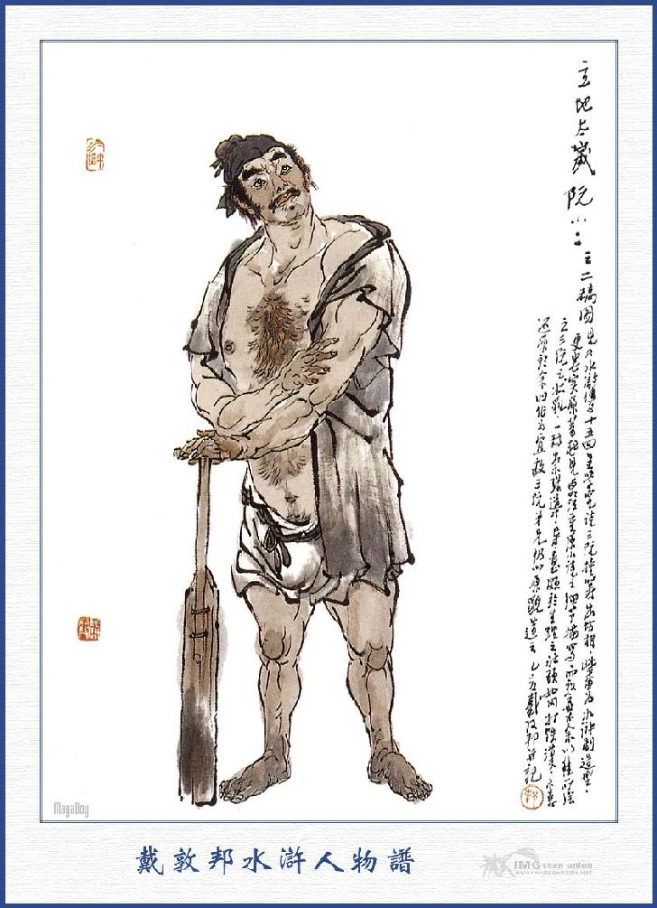
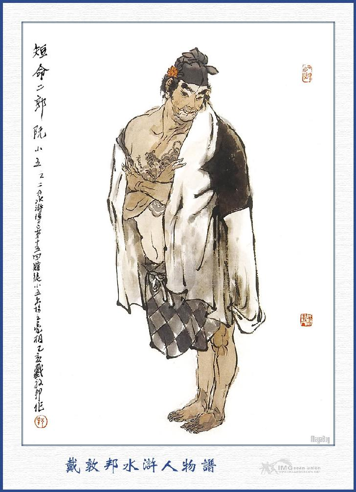
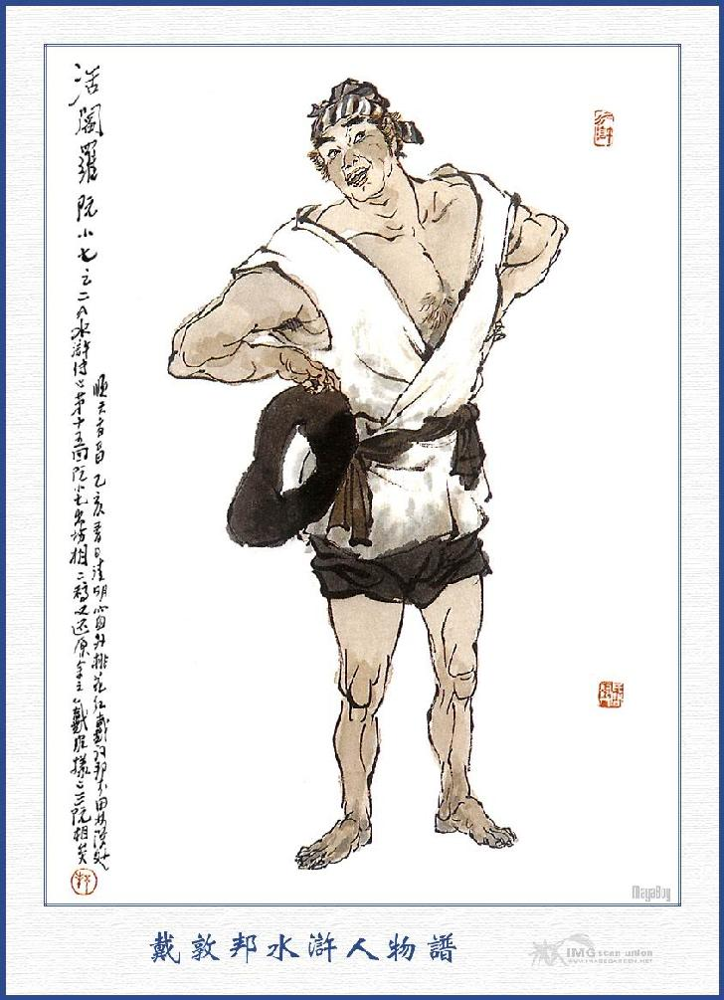
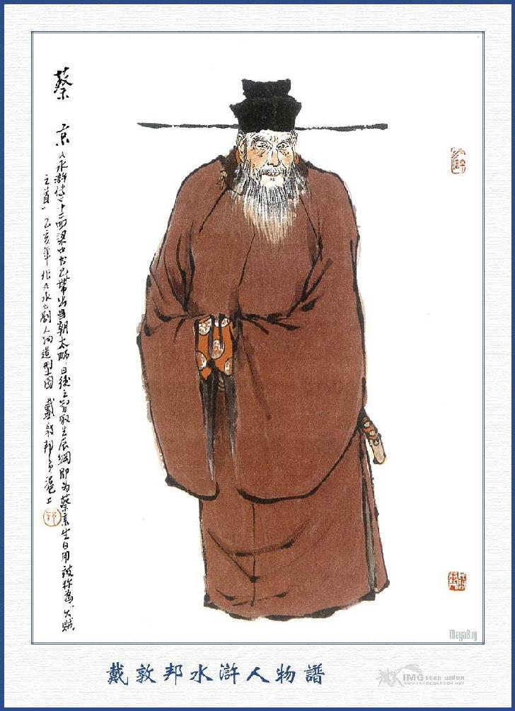
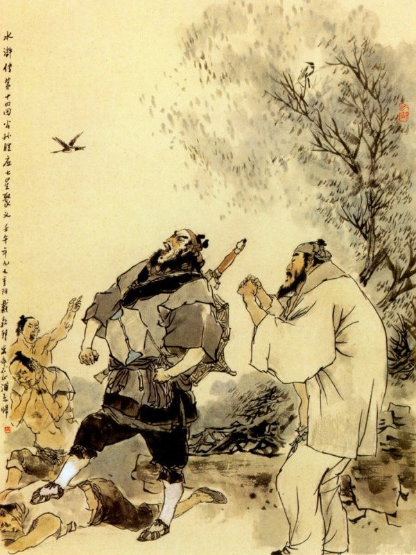

Khi đó Tiều Cái nghe Ngô Dụng nói, thì vội vàng hỏi rằng:
- Ba người ấy là ai, xin ngài cho tôi biết?
Ngô Dụng đáp:
- Ba người ấy là ba anh em ruột ở thôn Thạch Kiệt, gần Lương Sơn Bạc, xưa nay chỉ sinh nhai về nghề đánh cá, và cũng đôi khi có giở ngón chơi bời ghê gớm. Một người là Lập Địa Thái Tuế Nguyễn Tiểu Nhị, một người là Đoản Mạnh Nhị Lang Nguyễn Tiểu Ngũ, và một anh là Hoạt Diêm La Nguyễn Tiểu Thất, ba anh em đều chơi thân với tôi cả. Và tôi xem ý ba anh ấy dẫu không học thức gì, song thực là những người có chí khí nam nhi, mà lại có lòng nghĩa hiệp quả cảm, nếu được có bọn họ giúp cho, thì chả việc gì mà không xong được.
Tiều Cái nói:
- Tôi cũng nghe danh thấy tiếng ba anh em họ Nguyễn đã lâu, nhưng chưa có dịp nào được gặp. Thôn Thạch Kiệt chỉ cách đây chùng một dặm đường, hay là thử cho người đi triệu họ đến đây, được chăng?
- Không được, việc ấy tất là tôi đi thì mới thuyết được họ đến đây, chứ sai người đi thì hỏng mất.
Tiều Cái cả mừng mà rằng:
- Nếu tiên sinh nghĩ thế thì còn gì hơn, nhưng chẳng hay bao giờ tiên sinh định đi?
- Việc này không thể chậm được, chỉ đêm hôm nay tôi đi, là sáng mai có thể đến đấy được rồi.
Tiều Cái lấy làm vui lòng khen phải, rồi sai người nhà dọn rượu lên để ba người cùng đánh chén.
Ngô Dụng bảo với Lưu Đường rằng:
- Con đường từ Bắc Kinh đi sang Đông Kinh, thì ta đã thuộc cả rồi, nhưng không biết rằng họ đi lối nào? Việc này có lẽ phải phiền Ngô Huynh thám thính giúp, xem hôm nào họ đi, và họ đi đường nào mới được. Lưu Đường nói:
- Vâng, để đêm nay tiểu đệ xin đi.
Ngô Dụng nói:
- Nhưng mà hãy thư thả, nay mới là đầu tháng năm, còn cách hơn bốn mươi ngày nữa, mới đến rằm tháng sáu, vậy hãy xin đợi tôi đi bảo đám kia về rồi sẽ liệu.
Đoạn rồi ba người cùng uống rượu với nhau, hồi lâu mới nghỉ. Vào khoảng đầu trống canh ba, Ngô Dụng dậy sớm rửa mặt mũi, ăn qua miếng cơm sáng rồi, giắt lấy ít tiền mà từ giã Tiều Cái, Lưu Đường rồi đi sang Thạch Kiệt. Trưa hôm sau đi đến thôn Thạch Kiệt, Ngô Dụng vào thẳng nhà Nguyễn Tiểu Nhị. Khi đến cửa thấy có mười mấy gian nhà lá ở giữa khoảng non cao nước thẳm, trước hàng dậu thưa có chăng phơi một bức lưới rách và có mấy con thuyền câu buộc ở cọc dậu.
Bấy giờ Ngô Dụng lên tiếng hỏi rằng:
- Nhị Ca có nhà hay không?
Vừa hỏi dứt lời, thì Nguyễn Tiểu Nhị đã chạy ra, trông thấy Ngô Dụng rồi vồn vã hỏi chào rằng:
- Kìa tiên sinh, đã lâu không được gặp, chẳng hay cơn gió gì, thổi tiên sinh trôi dạt đến đây thế?
Ngô Dụng cười mà đáp rằng:
- Tôi có chút việc, muốn đến phiền Nhị Ca đây!
- Việc gì xin tiên sinh cứ nói.
- Tôi lâu nay ngồi dạy học ở nhà một người Đại phú hộ, nay ông ta sắp làm bữa tiệc, muốn cần dùng mươi lăm con cá lớn, vào khoảng mười bốn, mười lăm cân một, bởi vậy tôi muốn đến đây phiền quan bác giúp cho.
Nguyễn Tiểu Nhị cười mà đáp rằng:
- Tiểu đệ hãy xin hầu tiên sinh mấy chén rượu, rồi ta sẽ nói chuyện được chăng?
Ngô Dụng nói:
- Được lắm, chính ý tôi cũng muốn uống với Nhị Ca mấy chén cho vui đây.
- Nếu vậy bên kia hồ có mấy hàng rượu, ta xuống thuyền sang đấy đánh chén một thể.
Ngô Dụng nói:
- Thế thì hay lắm, nhưng tôi còn muốn nói chuyện với bác Tiểu Ngũ nữa, không biết rằng bác ấy có nhà không?
Tiểu Nhị nói:
- Ta thử cùng đến đấy xem!
Nói đoạn bảo Ngô Dụng cùng xuống thuyền cởi dây buộc mà chèo đi.
Vừa chèo đi được một quãng, thì thấy Tiểu Nhị vẫy tay đằng trước mặt mà nói to lên rằng:
- Thất Ca có thấy Ngũ Ca đâu không?
Ngô Dụng nghe hỏi, ngẩng lên nom thì thấy trong đám bụi lau, có một con thuyền lách ra, rồi thấy Nguyễn Tiểu Thất đội nón lá, mặc áo ngắn, ngồi ở trên vừa chèo vừa hỏi rằng:
- Nhị Ca định tìm Ngũ Ca để làm gì đó?
Ngô Dụng liền ứng lên rằng:
- Thất Ca ơi! Tiểu Đệ đến hầu chuyện các bác đây!
Nguyễn Tiểu Thất trông thấy Ngô Dụng, thì mừng rỡ mà rằng:
- Chào tiên sinh, tiên sinh đến đây từ bao giờ, mà sao lâu nay không được gặp thế?
Ngô Dụng nói:
- Mời bác đi uống rượu với Nhị Ca một thể đi.
- Vâng, hôm nay có tiên sinh đến chơi, tôi xin đi hầu ngài mấy chén rượu cho vui.
Nói đoạn cùng chèo thuyền đi đến một chỗ gò cao ở giữa hồ, trên có bảy tám gian nhà lá, rồi Nguyễn Tiểu Nhị lên tiếng mà hỏi rằng:
- Lão Nương ơi! Ngũ Ca có nhà hay không?
Bà già nghe hỏi, chạy ra đáp rằng:
- Ối chà! Nói thế nào được! Bây giờ cá cũng không đánh, chỉ suốt ngày cờ bạc rông dài, xác xơ như nhộng vậy. Vừa rồi mới về tháo cành thoa ở trên đầu tôi, đem đi đánh bạc rồi đấy.
Tiểu Nhị nghe nói thì cười một tiếng, rồi lại quay thuyền đi. Nguyễn Tiểu Thất đi thuyền sau nói với Nguyễn Tiểu Nhị rằng:
- Không biết làm sao mà Ngũ Ca đen thế? Đánh bạc chỉ thua hoài mãi thôi, mà đến tôi đây cũng thế, phen này thực là trần trụi không còn gì nữa.
Ngô Dụng thấy nói như thế, thì trong lòng ám tưởng: "Anh này tất mắc kế của ta". Bây giờ hai thuyền chèo đi được một lúc, đến bên cầu Độc Mộc có một đại hán vác hai chuỗi tiền, đương vội xuống thuyền sắp đi. Nguyễn Tiểu Nhị kêu to lên rằng:
- Ngũ Lang phát tài chăng?
Nguyễn Tiểu Ngũ nghe hỏi mà cười rằng:
- Té ra là Ngô tiên sinh đấy à? Sao mấy năm nay không gặp tiên sinh thế? Tôi đứng trên cầu trông thấy các ông đã nửa ngày rồi.
Nguyễn Tiểu Nhị nói:
- Tôi với Ngô tiên sinh đến tận nhà tìm, thấy lão nương nói rằng đi đánh bạc rồi chúng tôi lại kéo đến đây để mà tìm. Bây giờ chúng ta mời Ngô Tiên Sinh đi lên hàng đánh chén đi.
Nguyễn Tiểu Ngũ nghe nói, nhảy xuống thuyền, ba cái cùng thong dong chèo đi đến một chỗ khóm sen gần đó, rồi buộc thuyền vào bến mà đi đến tửu điếm. Khi vào tới tửu điếm, bốn người cùng đến một chỗ nhà sàn, tìm chỗ bàn ghế sơn dầu sạch sẽ, rồi Tiểu Nhị nói với Ngô Dụng rằng:
- Tiên Sinh đừng cười anh em tôi là thô tục, xin đón tiên sinh ngồi trên.

NGUYỄN TIỂU NHỊ
Ngô Dụng nói:
- Có đâu dám thế, xin mời các bác ngồi.
Tiểu Thất nói:
- Ca Ca xin ngồi chủ vị, để tiên sinh ngồi khách vị, còn hai anh em tôi ngồi đây trước là xong.
Ngô Dụng cười nói:
- Phải, tính Thất Lang nhanh nhẹn thế là phải.
Đoạn rồi bốn người cùng ngồi, gọi một thùng rượu và các thứ đũa chén lên.
Nguyễn Tiểu Nhị hỏi nhà hàng rằng:
- Có gì nhắm tốt không?
- Có thịt bò mới, béo lắm, các ngài xơi.
- Được rồi, lấy mươi cân thái to to đem ra đây.
Nhà hàng vâng lời quay đi, Nguyễn Tiểu Nhị lại nói với Ngô Dụng rằng:
- Xin tiên sinh chớ cười chúng tôi là vô lễ.
- Lẽ nào?tôi đến đây phiền nhiễu các bác thì có, Nguyễn Tiểu Nhị nói:
- Sao tiên sinh dạy thế?
Bấy giờ nhà hàng đem thịt bò lên bầy trên bàn, rồi ba anh em họ Nguyễn cất chén, mời Ngô Dụng xơi rượu và lấy thức nhắm. Ngô Dụng ăn có mấy miếng thịt, thì không nuốt đi được nữa. Bọn kia thì ngốn như xa cán ngốn bông vậy. Một lúc rồi Nguyễn Tiểu Ngũ mới ngẩng đầu lên hỏi chuyện Ngô Dụng rằng:
- Tiên sinh đến chơi đây. Chẳng hay có việc gì nữa?
Nguyễn Tiểu Nhị nói:
- Bây giờ tiên sinh ngồi dạy học ở một nhà phú hộ, ngài muốn đến đây hỏi anh em ta tìm hộ cho mươi lăm con cá to, nặng chừng mười bốn mười lăm ký một.
Nguyễn Tiểu Thất nói:
- Giá mọi khi ra thì đến năm ba chục con cũng có thể kiếm được, nhưng bây giờ thì đến hạng cá mươi cân cũng khó lòng mà có được.

NGUYỄN TIỂU NGŨ
Nguyễn Tiểu Ngũ nói:
- Nếu tiên sinh có dùng hạng cá to độ năm sáu cân một, thì chúng tôi xin tặng ngài được mươi con.
Ngô Dụng cười mà rằng:
- Tôi có tiền đây, mua hết bao nhiêu thì xin tính trả, song tất phải dùng hạng mười bốn mười lăm cân mới được, còn hạng bé thì tôi không dùng đến.
Nguyễn Tiểu Thất nói:
- Nếu thế thì tiên sinh tìm ở đâu cũng không được, đến ngay như hạng năm sáu cân mà Ngũ Ca tôi nói, cũng là hiếm lắm mà cũng phải đợi đến mấy hôm mới có thể tìm được nữa là. Á quên trong thuyền tôi có mấy con cá nhỏ còn sống ở đó, ta đem ra đây mà chén cho xong.
Nói đoạn chạy ra mở sạp thuyền bắt mấy con cá ước năm bảy cân lên, đem vào bếp nấu nướng một lúc rồi đem bày lên bàn ăn.
Nguyễn Tiểu Thất lại nói:
- Xin mời tiên sinh xơi tạm vậy.
Bấy giờ bốn người lại cùng bắt tay vào ăn uống một lúc, rồi Ngô Dụng tự nghĩ một mình rằng:
- Ở chỗ này bây giờ nói chuyện cũng không tiện, tất thế nào đêm nay cũng phải ngủ lại ở nhà trọ, thì mới có thể nói được.
Được một lát trời đã gần tối, Nguyễn Tiểu Nhị nói với Ngô Dụng rằng:
- Bây giờ trời sắp tối rồi, xin đón tiên sinh về nghỉ ở nhà tôi, rồi sáng mai ta sẽ bàn.
Ngô Dụng nói:
- Tôi đi hôm nay thực là may mắn, mới gặp được cả ba bác như thế này, vậy tiền bữa rượu hôm nay chắc là không khi nào các bác để cho tôi trả. Nhưng còn đêm nay tôi còn phải nghỉ nhờ ở bên Nhị Ca một tối, nhân tôi có ít tiền đây, muốn phiền các bác mua hộ ngay rượu thịt ở đây, rồi ta về mua thêm con gà ở quanh xóm để tối nay đánh chén nói chuyện với nhau có được không?
Nguyễn Tiểu Nhị nói:
- Có khi nào chúng tôi lại để cho tiên sinh trả tiền; cái đó chắc anh em chúng tôi phải chuẩn bị cả, chả lẽ lại không kiếm được đủ hay sao?
- Đành vậy, nhưng trong lòng tôi thành tâm như thế, nếu các bác không nghe lời ấy, thì tôi xin về bây giờ, không dám lưu lại nữa.
Nguyễn Tiểu Thất nói:
- Thôi tiên sinh đã nói, thì ta hãy cứ cầm lấy, rồi sau sẽ liệu.
Ngô Dụng nói:
- Phải, tính Thất lang nhanh nhẹn thế, thú lắm.
Nói đoạn, lấy một lạng bạc đưa cho Nguyễn Tiểu Thất, Tiểu Thất lấy tiền, gọi nhà hàng ra mua một hũ rượu lớn, hai mươi cân thịt bò sống, và đôi gà to, rồi Tiểu Nhị tính trả tiền mà về. Bốn người đi ra khỏi tửu điếm, tìm đến chỗ buộc thuyền, rồi bước xuống cổi thuyền chèo về nhà Nguyễn Tiểu Nhị. Khi về tới nơi, Nguyễn Tiểu Nhị mời mấy người vào mái Thủy Đình đằng trong để ngồi chơi rồi sai vợ (ba anh em duy một mình Tiểu Nhị có vợ) và người nhà giết gà nấu thịt làm chén. Vào khoảng gần hết canh một, các thức nhắm đã làm xong, bày biện ở trên bàn, bốn người quây quần vào đánh chén. Bấy giờ Ngô Dụng lại giở đến chuyện mua cá mà rằng:
- Ở đây hồ lớn như thế, mà sao lại không có cá to?
Nguyễn Tiểu Nhị nói:
- Chả giấu gì ngài, cá to thì trừ ra chỉ ở Lương Sơn Bạc là có được, chứ ở thôn đây hẹp hòi làm sao tìm bới cho ra!

NGUYỄN TIỂU THẤT
- Đây với Lương Sơn Bạc chỉ có một con nước thông nhau, không xa là mấy, sao không vào đấy mà đánh cá có được không?
Nguyễn Tiểu Nhị thở ra một tiếng mà than rằng:
- Nếu vào được, còn nói làm chi nữa?
Ngô Dụng hỏi:
- Làm sao bác lại thở dài, mà bảo không vào được?
Nguyễn Tiểu Nhị vội đỡ lời lên rằng:
- Tiên sinh không biết, chỗ Lương Sơn Bạc trước vẫn là kho cơm áo của chúng tôi, nhưng ngày nay lại không dám đến nữa rồi.
Ngô Dụng nói:
- Có lẽ một chỗ rộng lớn như thế, mà quan tư lại cấm đánh cá hay sao?
- Quan tư nào cấm chúng tôi đánh cá, có đến ông Diêm Vương sống cũng không cấm được nữa là.
- Nếu vậy, sao không dám vào?
- Tiên sinh không biết đâu, để tôi kể chuyện cho tiên sinh nghe.
Ngô Dụng làm bộ ngơ ngẩn mà rằng:
- Thực tôi không biết là thế nào cả.
Nguyễn Tiểu Thất tiếp luôn:
- Chỗ Lương Sơn Bạc thì gớm lắm! Bây giờ mới có một bọn cường đạo ở đấy, họ có cho đánh cá nữa đâu!
Ngô Dụng lại hỏi:
- Thế ra tôi không biết! Bây giờ lại có bọn cường nhân ở đấy, mà sao tôi không nghe thấy bao giờ?
Nguyễn Tiểu Nhị nói:
- Bọn ấy có anh đầu đảng là một anh học trò thi hỏng trở về, tên là Bạch Y Tú Sĩ Vương Luân, anh thứ hai là Mô Tước Thiên Đỗ Thiên và anh thứ ba là Vân Lý Kim Cương Tống Vạn. Lại có anh là Hãn Địa Hốt Luận Chu Quý, thì mở cửa hàng ở ngoài đường cái, để dò xét sự tình. Mới đây lại thêm một anh hảo hán, trước đã từng làm Giáo Đầu dạy cấm quân ở Đông Kinh, tên là Báo Tử Đầu Lâm Xung nào đó, lại là một tay võ nghệ siêu quần, không ai địch nổi. Mấy đứa chó má ấy nó tụ họp có tới năm bảy trăm lâu la, chỉ đi phá nhà cửa, cướp bóc khách buôn, rồi giữ riết lấy chỗ ấy, làm cho anh em chúng tôi, đến hơn năm nay mất cả áo cơm với họ, mà không dám vào đấy nữa!
Ngô Dụng nói:
- Có sự lạ thế mà tôi không biết! Nhưng làm sao quan quân lại không tróc nã họ đi?
Nguyễn Tiểu Ngũ nói:
- Nếu quan quân mà động đến, tất là tàn hại đến dân, vì họ nghe tiếng động ở đâu, là họ hãy bắt các giống lợn gà chó má ở đấy để chè chén với nhau, rồi họ lại tống lấy ít tiền đã, bởi thế nên đám tuần cảnh bộ tập cũng đành phải mặc họ, mà không dám đến các hương thôn. Vả chăng nếu Thượng Thư có sai đến đám nào đi, thì anh nào anh ấy cũng sợ xôn xao cả rồi, còn làm gì được họ nữa?
Nguyễn Tiểu Nhị nói:
- Chúng ta đây dẫu dạo này không kiếm được cá lớn, song cũng không đến nỗi bị họ quấy nhiễu như thế, cũng khá lắm rồi.
Ngô Dụng nói:
- Như thế, thì họ cũng khoái hoạt lắm nhỉ?
Nguyễn Tiểu Ngũ nói:
- Bọn ấy nó không sợ trời, không sợ đất, cũng không sợ quan tư, chỉ là có vàng bạc thì tiêu với nhau, có gấm vóc thì mặc với nhau, rượu uống hàng vò, thịt ăn hàng tảng, như thế thì làm gì mà không khoái hoạt? Như anh em tôi thành ra cũng có võ nghệ trong mình, mà không làm sao được như bọn họ, thế có chán không?
Ngô Dụng nghe đến câu đó, thì trong bụng lại mừng thầm, chắc là kế sách phải xong.
Nguyễn Tiểu Thất lại nói:
- Người ta sống một thời, cũng như cây cỏ sống một mùa, như anh em chúng tôi chỉ đánh cá kiếm ăn, sao bằng học họ được một ngày, là một ngày khoái hoạt.
Ngô Dụng nói:
- Hạng người ấy thì họ làm gì? Sự nghiệp của họ bất qua chỉ đến khi quan tư bắt được là roi trượng vào thân, mà uy thế hùng dũng cũng đến vất đi, để chịu tội, chứ làm sao hơn được nữa?
Nguyễn Tiểu Nhị nói:
- Đám quan tư bây giờ, thì lại gà mờ không biết lắm. Những đứa ngập mắt chán vạn ra đấy, nhưng nào có việc gì đâu? Anh em chúng tôi bây giờ, thực là mất cả khoái hoạt, nếu có ai dắt cho đi như bọn kia, thì là đi ngay lập tức.
Nguyễn Tiểu Ngũ nói:
- Tôi cũng thường nghĩ như thế, nhưng anh em mình thực là võ nghệ chẳng kém gì ai, nhưng nào có ai biết đến.
Ngô Dụng nói:
- Nhưng mà có ai biết đến, thì ca bác cũng chả chịu đi đâu?
Nguyễn Tiểu Thất đáp:
- Nếu có ai biết đến anh em chúng tôi, thì dẫu dấn thân vào nơi nước lửa chúng tôi cũng đi, mà nếu có ai dùng đến chúng tôi được một ngày, thì dẫu cho chết ngay cũng được thoả lòng, ở nơi chín suối.
Ngô Dụng nghe nói lấy làm mừng thầm trong bụng: "Ba anh em đã có ý thế, để ta tìm kế nhủ khuyên dần". Liền cất chén mời ba người uống luôn mấy tuần rượu nữa, rồi hỏi rằng:
- Bây giờ các bác phỏng có dám lên Lương Sơn Bạc mà bắt tụi ấy hay không?
Nguyễn Tiểu Thất đáp luôn rằng:
- Nếu có bắt được họ mà đem nộp quan lấy thưởng, thì cũng bị đám hảo hán giang hồ trên đời chê cười không ra gì nữa.
Ngô Dụng nói:
- Như ý tôi thiết nghĩ: Bây giờ ba bác bực mình vì chài lưới kiếm ăn, cũng chả lấy gì làm khoái hoạt, vậy hay là ca bác nhập bọn với họ hóa ra lại thú hơn.
Nguyễn Tiểu Nhị nói:
- Tiên sinh không biết, chứ anh em chúng tôi đã mấy phen toan vào nhập bọn với họ đấy. Nhưng về sau thấy bọn thủ hạ của Bạch Y Tú Sĩ Vương Luân thường nói rằng: Anh ta bụng dạ hẹp hòi, không có lượng bao dung kẻ khác, mới đây Giáo Đầu Lâm Xung đến đó, cũng bị anh ta đãi chẳng ra gì, vì thế anh em tôi chán nản không muốn lên đấy nữa.
Nguyễn Tiểu Thất nói:
- Giá bọn họ mà được khẳng khái như tiên sinh, yêu đãi anh em tôi thì còn đâu nữa?
Nguyễn Tiểu Ngũ cũng nói:
- Phải, nếu bọn họ được như Ngô tiên sinh, thì anh em tôi đi đã lâu rồi, còn đâu đợi đến ngày nay, dẫu cho có vì họ mà chết nữa cũng can tâm.
Ngô Dụng khiêm tốn mà rằng:
- Tôi đây đã thấm vào đâu, bây giờ thiên hạ thiếu gì những tay hảo hán anh hùng hào kiệt mà.
Nguyễn Tiểu Nhị nói:
- Đã đành là bọn hảo hán không thiếu gì, nhưng anh em chúng tôi không được gặp.
Ngô Dụng nói:
- Gần đây có ông Tiều Bảo Chính ở thôn Đông Khê, huyện Vận Thành, các bác có biết không?
Nguyễn Tiểu Ngũ nghe nói liền hỏi:
- Chẳng hay ông ấy là ông Thác Tháp Lý Thiên Vương Tiều Cái đó chăng?
Ngô Dụng nói:
- Chính phải đấy.
- Chỗ ông ấy ở chỉ cách đây chừng hơn trăm dặm đường, nhưng chúng tôi cũng là duyên hèn phận bạc, cho nên chỉ nghe tiếng mà không được gặp mặt bao giờ!
Ngô Dụng nói:
- Ông ta là tay nam tử giỏi giang, mà lại có lòng trọng nghĩa khinh tài, vậy sao các bác không đến chơi với ông ta?
Nguyễn Tiểu Nhị nói:
- Vì anh em chúng tôi cũng không có việc gì đi đến đấy cho nên cũng không được gặp.
Ngô Dụng nói:
- Ấy bấy lâu nay tôi vẫn dạy học ở gần ngay cạnh trại của ông ta đấy, mới đây nghe nói ông ta sắp có một việc rất phú quý, cho nên tôi muốn đến đây bàn với các bác, để chẹn đường mà cướp lấy, các bác nghĩ sao?
Nguyễn Tiểu Ngũ nói:
- Không được, người ta là người trọng nghĩa khinh tài, có khi nào chúng ta lại làm thế, để cho bọn giang hồ hảo hán chê cười.
Bấy giờ Ngô Dụng cả cười mà rằng:
- Tôi vẫn tưởng bụng các bác cũng không được vững chắc, chứ nào biết đâu các bác lại có lòng khẳng khái, hiếu nghĩa như thế. Tôi xin nói thực với các bác, chính tôi ở chỗ Tiều Bảo Chính đến tìm các bác đây, nếu các bác quả có lòng giúp đỡ, thì tôi sẽ nói một việc này để các bác nghe.
Nguyễn Tiểu Nhị nói:
- Ba anh em chúng tôi thực là nhất tâm như thế, không hề có một chút gì giả dối cả. Nếu quả có việc ngang tắt gì, mà muốn phiền tiên sinh đến bảo anh em tôi đi, thì chúng tôi xin thề rằng: Nếu không bỏ tính mạng để giúp được việc ấy, thì khi cạn chén rượu này chúng tôi sẽ chịu tội ác đến thân, mà chết vào sự phi mệnh.
Bấy giờ Nguyễn Tiểu Thất cùng Nguyễn Tiểu Ngũ, đều vỗ tay lên đầu mà rằng:
- Một bầu nhiệt huyết đây, chỉ bán cho người biết của đấy thôi.
Ngô Dụng nói:
- Ba bác ở đây, không phải là tôi định đến quyến rũ để làm hại cái lòng tử tế của các bác, nhưng việc này là một việc lớn, chứ không phải tầm thường: Nguyên đến hôm rằm tháng sáu này, là ngày sinh nhật của Xài Thái Sư ở trong triều, người con rể là Lương Trung Thư ở Đại danh phủ Bắc Kinh có mua tới 10 vạn quan kim ngân châu báu, nay mai sắp đưa vào mừng. Chuyện ấy có một người hảo hán là Lưu Đường đến mách, cho nên muốn đến đây bàn với các bác, hôm ấy ta sẽ lập kế tìm tới chỗ núi non tĩnh mịch nào mà chẹt lấy, cái của bất nghĩa ấy, để chi dụng với nhau có khoái hoạt không?Chẳng hay các bác nghĩ sao?

XÀI KÍNH (XÀI THÁI SƯ)
Nguyễn Tiểu Ngũ nghe nói cả mừng, bảo với Tiểu Thất rằng:
- Thất lang, ta định thế nào?
Nguyễn Tiểu Thất nhảy quớ lên mà rằng:
- Cái chí nguyện một đời, có lẽ phen này mới thoả chăng? Trời ơi! Việc ấy thực là gãi vào chỗ ngứa! Nhưng chẳng hay đến bao giờ mới đi?
Ngô Dụng nói:
- Vào khoảng đầu canh năm, xin mời các bác đi sang nhà Tiều Bảo Chính với tôi.
Ba anh em họ Nguyễn rất vui lòng, cùng Ngô Dụng uống rượu tới đêm khuya mới ngủ. Sáng hôm sau bốn người cùng dậy sớm, ăn cơm nước xong rồi, bọn anh em họ Nguyễn dặn dò nhà cửa cẩn thận, rồi cùng Ngô Dụng đi ra. Khi tới thôn Đông Khê đã thấy Tiều Cái, Lưu Đường, ra đứng ở gốc cây hòe để đón Ngô Dụng dẫn ba anh em họ Nguyễn tới gốc cây hòe, để chào Lưu Đường và Tiều Cái. Tiều Cái trông thấy ba anh em họ Nguyễn thì trong bụng mừng thầm. "Nguyễn thị tam hùng, thực là xứng đáng", liền mời về trong trang để nói chuyện. Bấy giờ sáu người cùng nhau thủng thỉnh đi vào trong trang, đến tận nhà trong; kéo ghế chia tân chủ cùng ngồi, rồi Ngô Dụng đem chuyện ba anh em họ Nguyễn, cũng tâm đầu ý hợp kể cho mọi người nghe. Tiều Cái cả mừng liền sai người nhà giết lợn dê mua sắm vàng hương về để làm lễ. Ba anh em họ Nguyễn trông thấy Tiều Cái mặt mũi hiên ngang, nói năng lỗi lạc, thì cũng hết bụng vui mừng mà nói rằng:
- Nếu chúng tôi không có Ngô tiên sinh dẫn đến đây, thì làm sao được gặp các ngài?
Đoạn rồi Tiều Cái lại sai người làm cơm dọn lên sáu người cùng ăn uống, nói chuyện với nhau suốt nửa đêm ấy. Sáng sớm hôm sau, Tiều Cái bày các đồ giấy vàng ngựa mã, cùng các lễ dê lợn lên mặt trước nhà trong, rồi sáu người cùng làm lễ phát nguyện với nhau. Mọi người thấy Tiều Cái rất lòng thành kính như vậy, thì ai nấy đều hớn hở vui mừng, mà đồng thanh thề nguyện rằng:
- Lương Trung Thư ở Bắc Kinh làm hại dân gian, lấy hại nhiều tiền của, nay lại đem vào Đông Kinh để mừng sinh nhật Xài Thái Sư, vậy những của ấy toàn là những của gian ngoan bất nghĩa. Nay trong sáu anh em chúng tôi, lấy lòng trọng nghĩa khinh tài, nếu ai có một chút gì tư lợi, thì xin trời chu đất triệt, thần minh soi xét không dung.
Làm lễ xong rồi đốt vàng đốt mã cẩn thận, đoạn rồi cùng ngồi uống rượu thụ lộc thánh với nhau. Đương khi đó thấy người nhà vào báo rằng:
- Ngoài cửa có một tiên sinh nào, nói rằng muốn gặp Bảo Chính để xin tiền.
Tiều Cái nghe nói bảo người nhà rằng:
- Sao bây không biết gì cả! Ta còn mắc uống rượu tiếp khách trong này, thì bay lấy dăm ba đấu gạo đưa cho người ta rồi nói: Ta còn bận, không thể tiếp có được không?
Người ấy vâng lời chạy ra một lúc rồi lại vào nói rằng:
- Chúng con đã cho mấy đấu gạo, nhưng tiên sinh ấy nhất định không đi, tự xưng là Nhất Thanh Đạo Nhân, muốn gặp Bảo Chính để nói chuyện, chứ không phải vì tiền gạo mà đến đây.

Tiều Cái mắng rằng:
- Bây không biết là thế nào à? Ra nói với người ta rằng: "Hôm nay ta còn mắc bận, không thể vào tiếp được, xin đến hôm sau vậy".
- Bẩm con đã nói thế, nhưng tiên sinh ấy bảo rằng: Không cần gì tiền bạc, chỉ nghe thấy tiếng Bảo Chính là người nghĩa khí, nên muốn đến chào đó thôi.
Tiều Cái gắt rằng:
- Chúng bây không đỡ được việc gì, chỉ nhiễu ta thôi. Nếu người ta có chê ít, thì cho thêm người ta, chứ hà tất phải vào nói với ta! Nếu ta không bận tiếp rượu ở đây, thì ta xử trí ngay rồi, còn cần chi chúng bây phải nói. Thôi đi ra liệu cho người ta thế nào cho xong đi, đừng vào nói với ta nữa!
Người nhà nghe nói, lại chạy ra bảo với người kia. Chợt đâu ngoài cửa trang ầm ầm cả lên, rồi thấy một người lật đật chạy vào bảo rằng:
- Tiên sinh ấy đã phát cáu, đánh mười mấy tên người nhà ngã lăn ra cả ngoài kia.
Tiều Cái nghe nói giật mình kinh sợ, vội vàng đứng dậy nói rằng:
- Xin mời các ngài hãy ngồi xơi rượu, để tôi chạy ra xem sao?
Nói đoạn chạy hớt hãi ra ngoài cửa trang, thì thấy một người cao chừng tám thước, đạo mạo đường đường, trông rất cổ quái, đương ở chỗ cây hòe ngoài cổng, vừa đánh vừa nói ầm ĩ lên rằng:
- Không biết người, không biết người.
Tiều Cái nghe nói, chạy ra lên tiếng mà rằng:
- Tiên sinh ơi, xin ngài bớt giận! Tiên sinh đến nhà Tiều Bảo Chính, có phải là thiếu gạo nước lương thực thì người ta đã đưa ra rồi, còn việc chi mà tiên sinh giận dữ như thế?
Người kia nghe nói, thì cười ha hả lên mà rằng:
- Bần đạo đến đây có phải vì cơm gạo tiền nong gì đâu. Tôi đến đây cốt tìm Tiểu Bảo Chính để nói chuyện, chứ đến 10 vạn quan tiền, tôi cũng chẳng coi vào đâu nữa là. Đám thôn phu vô lý quá!
Tiều Cái hỏi:
- Nếu vậy tiên sinh đã biết Tiều Bảo Chính chăng?
- Tôi được nghe tiếng, chứ chưa gặp mặt bao giờ.
- Thế thì chính tôi đây, tiên sinh có chuyện gì muốn nói?
Người kia vội vàng nói:
- Xin chào Bảo Chính, xin Bảo Chính tha lỗi cho tôi.
Tiều Cái nói:
- Không dám, xin mời tiên sinh vào trong nhà xơi tạm chén nước đã.
Nói xong liền mời người kia vào trong nhà, trong khi lũ Ngô Dụng thấy có người lạ vào, thì cùng bảo nhau chạy nấp cả vào một chỗ. Đoạn rồi Tiều Cái mời tiên sinh kia vào ở nhà trong để đãi nước. Khi uống nước xong, tiên sinh kia hỏi Bảo Chính rằng:
- Ngồi đây không thể nói chuyện được, xin ngài cho đến chỗ nào kia thì tiện hơn.
Tiều Cái biết ý, liền mời đến một chỗ gác con con rồi hỏi rằng:
- Thế này khi không phải, tôi xin hỏi quý tánh cao danh, và ngài ở đâu đến.
- Bần đạo là Công Tôn Thắng, đạo hiệu là Nhất Thanh Đạo Nhân, vốn người ở Kế Châu, từ thuở nhỏ có theo đòi võ nghệ, người ta thường gọi là Công Tôn Thắng Đại Lang. Tôi có học được ít đạo thuật, thường hay hô gió gọi mưa, cưỡi mây đạp gió, cho nên đám giang hồ thường gọi bần đạo là Nhập Vân Long, xưa nay vẫn được nghe tiếng Bảo Chính ở Vận Thành đây, nhưng cũng là vô duyên, cho nên chưa được gặp. Nay có món 10 vạn quan kim ngân bảo muốn đem đến đây để làm quà yết kiến, chẳng hay nghĩa sĩ có nhận cho chăng?
Tiều Cái cười mà đáp rằng:
- Tiên sinh nói đó, có phải là việc sinh nhật ở Bắc Kinh không?

CÔNG TÔN THẮNG
Công Tôn Thắng ngạc nhiên mà rằng:
- Sao Bảo Chính lại biết được?
- Tôi đoán xằng vậy, không biết rằng có hợp ý tiên sinh không?
- Vâng, cái món phú quý ấy, ta chớ bỏ mất mà hoài. Cổ nhân nói: "Đáng lấy không lấy, sau chớ phàn nàn! "Bảo Chính nghĩ sao?
Đương khi nói chuyện, thì chợt có một người ở đâu chạy ra nắm lấy tay Công Tôn Thắng mà rằng:
- Gớm thực! Dương gian có vương pháp, âm phủ có quỷ thần, ngươi dám bàn những việc ấy hay sao? Ta đứng nghe lâu rồi.
Công Tôn Thắng nghe nói, nét mặt biến hẳn đi mà không biết nói trả lời làm sao được? Mới hay:
Nước bèo gặp gỡ tự nhiên,
Nào ai hò hẹn mà nên hẹn hò?
Xưa nay những khách giang hồ,
Lưng bầu nhiệt huyết ai mà khác chi?
Tức gan sao nhịn được cười,
Kìa quân tham nhũng lộ người lầm than.
Đỉnh chung xa mã muôn vàn,
Chẳng qua máu mủ dân gian chứ gì?
Ra tay trừ của bất nghì,
Chứng minh xin có trời kia đất này!
Lời bàn của Thánh Thán
Bắt đầu câu chuyện Thủy Hử, từ thôn Thạch Kiệt vậy, mà sau kết lại truyện Thủy Hử, cũng ở Thạch Kiệt vậy, nghĩa của hai chữ Thạch Kiệt nói ra là định số vậy. Song lẽ nói từ Thạch Kiệt là theo lệ mà thác thủy (gợi mối) ra đây, chứ còn truyện Thủy Hử 108 anh hùng, thì vốn có trước kia, tức đã nói từ 13 hồi vậy, 108 người vốn có trước, thì phải kể là có từ trước, sao lại bắt đầu từ Thạch Kiệt? Thì phải đọc hồi Nguyễn Thị Tam Hùng, ở thôn Thạch Kiệt, để nhận ra 108 anh hùng, đi vào nơi Bến Nước, đã định đoạt từ đó mà ra.
Họ Nguyễn nói rằng: Người sống một đời, cỏ sống một mùa. Hỡi ôi! Lời nói hết ý vậy! Vì người sinh cõi đời, kẻ sống đến bảy mươi là thường thì lấy thời gian ấy mà nói, trong khoảng ấy, lại một nửa là đêm, còn một nửa ngày, lại không những thế mà thôi con người từ 15 tuổi về trước, hãy còn trẻ thơ, cũng như vất đi không đáng kể, sau khi 50 tuổi, tai mắt kém đi, cũng như vất bỏ vậy, trong khoảng đó chỉ còn 35 năm, lại còn bị cuộc đời mưa gió chiếm mất, bệnh tật chiếm mất, lo nghĩ đói rách chiếm mất. Thế thì như họ Nguyễn nói đến bọn không sợ trời không sợ đất, có tiền bạc thì tiêu với nhau, có gấm vóc thì mặc với nhau, rượu uống hàng vò, thịt ăn hàng tảng, như thế thì làm gì mà không khoái hoạt. Thử hỏi rằng họ Nguyễn kia đã được mấy ngày? Mà chẳng động tâm. Cho nên tác giả chép ra tên của ba người họ Nguyễn với một sự ngao ngán sâu xa; Nào là Lập Địa Thái Tuế, Hoạt Diêm La, Đoản Mệnh Nhị Lang, than ôi sống thác nhanh chóng, kiếp người không thường, giàu có khó tìm, nên tùy sở thích, chuyện đời nếu không viết ra sách, thì đâu được bền lâu?
Gia Lượng thuyết họ Nguyễn, khéo đưa đón ý, người đời có thể bắt chước, khi buông khi nắm, từ xa đến gần, như dắt lại tới, khác nào Gia Cát Lượng đối Mạnh Hoạch, đâu phải người đời có thể bắt chước, cho nên xem hồi Du Thuyết Nguyễn Thị, nên xem xét văn chương uyển chuyển, của bút phép tài tình, của một tác phẩm.